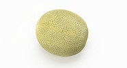

|  | A honeydew melon, also known as a green melon, is the fruit of one cultivar group of the muskmelon, Cucumis melo in the gourd family. The Inodorus group includes honeydew, crenshaw, casaba, winter, and other mixed melons. A honeydew has a round to slightly oval shape, typically 15–22 cm (5.9–8.7 in) long. It generally ranges in weight from 1.8 to 3.6 kg (4.0 to 7.9 lb). The flesh is usually pale green in color, while the smooth peel ranges from greenish to yellow. Like most fruit, honeydew has seeds. The inner flesh is eaten, often for dessert, and honeydew is commonly found in supermarkets across the world alongside cantaloupe melons and watermelons. In California, honeydew is in season from August until October. |